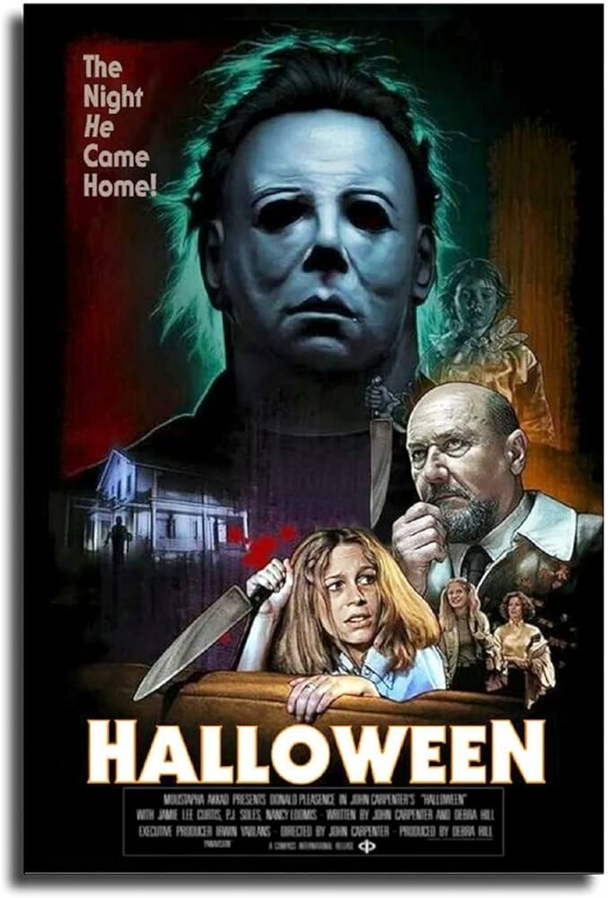

Halloween (1978)

Diretor: John Carpenter
Atores Principais: Jamie Lee Curtis, Donald Pleasence, Nancy Kyes, P.J. Soles e Nick Castle
Gênero: Terror / Slasher / Suspense
Censura: 16 anos
Duração: 91 minutos (1h 31min)
Sinopse
Quinze anos após assassinar sua irmã na noite de Halloween quando ainda era uma criança, Michael Myers foge de um hospital psiquiátrico e retorna à sua cidade natal, Haddonfield. Sob a perseguição de seu psiquiatra, o Dr. Sam Loomis, o assassino mascarado passa a espreitar um grupo de estudantes locais durante a noite de terror, transformando a vida da jovem Laurie Strode em um pesadelo.
← Voltar ao catálogo